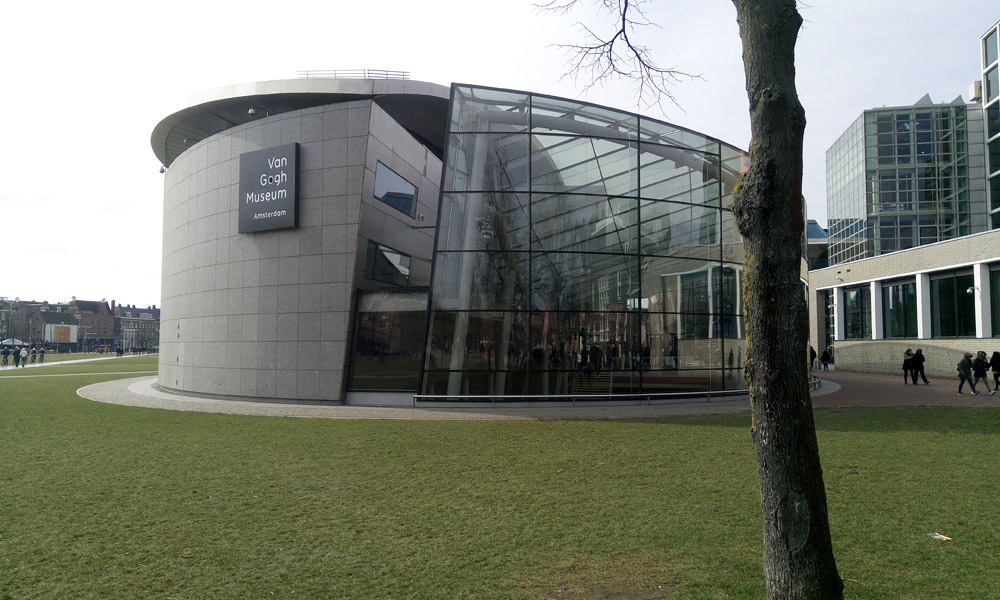

Kuća Ane Frank
Kanal u Amsterdamu
Kanal u Amsterdamu

Muzej Van Gogh-a

Nizozemski tulipani
Dam square
Amsterdam, prijestolnica Holandije, je jedan baš jedinstven i živ grad.
Predivni kanali, opušteni ljudi, svetski muzeji, oduševit će svakoga!
Šta posjetiti u Amsterdamu?
Kuća Ane Frank nalazi se u jednom od najlijepših krajeva Amsterdama. Kuća u čijem se potkrovlju Ana Frank skrivala sa svojom porodicom i gde je pisala svoj čuveni dnevnik pretvorena je u muzej. Kuća-muzej priča priču o Ani i porodici Frank, njihovom skrivanju od nacista i tragičnoj sudbini Jevreja za vreme Drugog svetskog rata. Dok stojite u kući i zamišljate njihov tadašnji život, sigurno će vas obuzeti more emocija, ali u ovom muzeju i iz same Anine priče svi možemo nešto da naučimo i to je razlog zašto ga preporučujem svima.
Amsterdam ima više kanala od Venecije i ti kanali su nešto što je tipično za Amsterdam. U toku vožnje imate prelep pogled na različite delove grada iz drugačije perspektive.
Vjerovatno najpoznatiji muzej Amsterdama. U ovom muzeju se nalaze čuveni Suncokreti i najveća kolekcija Van Gogovih slika na svetu. Pored slika i crteža, u muzeju su izložena i Van Gogova pisma kroz koje ćete doživjeti priču o teškom životu ovog umetnika.
Pijaca cvijeća se nalazi na reci Singel i to je, u stvari, plutajuća pijaca. Na pijaci možete uživati u mirisu i pogledu na raznobojno cvijeće i najpoznatije, holandske lale.
Glavni i najvažniji trg u gradu sigurno nećete zaobići, jer će vas put do drugih znamenitosti provesti kroz njega barem jedanput. Na trgu se nalazi bivša kraljevska palata.